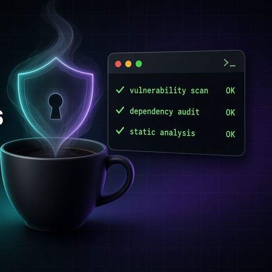

next-sitemap
Writes files to public/ in a postbuild step. Last release 4.2.3 in September 2023; on Next 16 + Vercel those files are not deployed.
FlagshipPre-alpha · planned APINext.js 16 · MIT
Typed metadata, safe JSON-LD, sitemaps with hreflang, OG templates and an SEO CI check for the Next.js 16 App Router. Built on native Next APIs, zero dependencies beyond next and react.
npm install next-herald # not yet publishedNot published to npm yet. No library code exists; everything here is the planned API from the README and design docs, open for feedback.
example.com › blog › app-router-seo
Shipping SEO in the App Router · Example
<JsonLd> output · < > & escaped
Illustration of documented behaviour (title template %s · Example, canonical normalisation, dev warnings over 70/160 characters, ADR 0004 escaping) running in your browser. next-herald is not published yet.
01 · The problem
The App Router moved SEO into Next itself (generateMetadata, sitemap.ts, robots.ts, opengraph-image). The popular packages come from the Pages Router era.
Writes files to public/ in a postbuild step. Last release 4.2.3 in September 2023; on Next 16 + Vercel those files are not deployed.
Maintained, but in the App Router it now recommends native generateMetadata for meta tags and focuses on JSON-LD components.
Covers the basics but has no sitemap index, no news sitemaps, shallow metadata merging, a JSON-LD guide that warns JSON.stringify is not XSS-safe, and no way to check a build.
A Next.js 16 App Router–only SEO kit that returns native Metadata, MetadataRoute.Sitemap/Robots and ImageResponse objects, fills the gaps Next leaves, and ships herald check, a dependency-free CI crawler for technical SEO mistakes. It makes no ranking or AI-citation claims and no performance claims.
02 · How it works
defineHerald in herald.config.ts is validated and frozen: siteUrl, title template, defaults, i18n, entity.
Entry points for metadata, jsonld, sitemap, robots and og return Metadata, MetadataRoute and ImageResponse objects. Next renders the <head>.
herald check fetches a running server or reads a static export, scans the head, builds a page model and runs pure rules into pretty, json, github or sarif reporters.
03 · Features planned
createMetadata for site defaults, pageMetadata for canonical and OG/Twitter, mergeMetadata for a deep merge, since Next merges per top-level key.
Builders for common schema.org types with Google-required fields enforced by TypeScript, a <JsonLd> Server Component and an entity graph by default.
herald routes scans app/; defineSitemap requires a typed params enumerator for every dynamic route. Image, video and language alternates.
Split at 50,000 URLs / 50 MB with a generated sitemap index; Google News sitemaps.
robots.ts with automatic sitemap lines, preview lock-down and AI-crawler rules split into training / search / user-fetch; search allowed by default.
Reciprocal alternates and x-default from one I18nSource; optional next-tongue adapter, recipes for next-intl and Paraglide.
Typed JSX templates on next/og ImageResponse, no bundled fonts.
Crawls a running server or a static export for title, description, canonical, hreflang, noindex, sitemap/robots and structured-data mistakes, with pretty, json, GitHub annotations and SARIF output.
A next dev overlay with the Google result snippet, OG/X cards and a chat link preview, plus live herald check warnings. Stripped from production.
Typed redirect rules for next.config or proxy.ts, with checks for chains, loops and temporary redirects where permanent ones are intended.
Compares SEO output with a base snapshot or branch and reports only changes as markdown or SARIF for PR comments.
Pure builders; works with cacheComponents: true and output: 'export'.
04 · Quick start planned API
// herald.config.ts
import { defineHerald } from 'next-herald/config';
export default defineHerald({
siteUrl: 'https://example.com',
siteName: 'Example',
title: { default: 'Example', template: '%s · Example' },
description: 'What Example does, in one sentence.',
});// app/layout.tsx (excerpt)
import { createMetadata } from 'next-herald/metadata';
import herald from '@/herald.config';
export const metadata = createMetadata(herald);// app/blog/[slug]/page.tsx
import { pageMetadata } from 'next-herald/metadata';
import { JsonLd, jsonLd } from 'next-herald/jsonld';
import herald from '@/herald.config';
import { getPost } from '@/lib/posts';
export async function generateMetadata({ params }: PageProps<'/blog/[slug]'>) {
const { slug } = await params;
const post = await getPost(slug);
return pageMetadata(herald, { path: `/blog/${slug}`, title: post.title, description: post.excerpt, type: 'article' });
}
export default async function Page({ params }: PageProps<'/blog/[slug]'>) {
const { slug } = await params;
const post = await getPost(slug);
return (
<article>
<JsonLd data={jsonLd.article({ headline: post.title, datePublished: post.date, author: { name: post.author } })} />
<h1>{post.title}</h1>
</article>
);
}// app/sitemap.ts
import { defineSitemap } from 'next-herald/sitemap';
import { routes } from '@/herald-routes.gen'; // written by `herald routes` (v0.2); v0.1: a hand-written list
import herald from '@/herald.config';
import { listSlugs } from '@/lib/posts';
export default defineSitemap(herald, {
routes,
params: { '/blog/[slug]': async () => (await listSlugs()).map((slug) => ({ slug })) }, // missing key = type error
});// app/robots.ts
import { defineRobots } from 'next-herald/robots';
import herald from '@/herald.config';
export default defineRobots(herald, { rules: [{ userAgent: '*', disallow: ['/admin'] }] });npx herald check --build --format github # CIFull walkthrough: Getting started · API reference · CLI
05 · Configuration
| Option | Type | Default | Notes |
|---|---|---|---|
siteUrl | string | — (required) | Absolute origin, https: (or http://localhost). Becomes metadataBase. Read at build time, never from headers. |
siteName | string | — | og:site_name, WebSite JSON-LD. |
title | { default, template } | — | template must contain %s; validated. |
description | string | — | Default description; herald check warns on duplicates anyway. |
locale | string | 'en' | og:locale (BCP 47, converted to en_US-style for OG). |
openGraph | Metadata['openGraph'] | {} | Merged into every page. |
twitter | { site?, creator?, card? } | card: 'summary_large_image' | |
trailingSlash | boolean | from next.config | Must match next.config; herald check flags canonicals that redirect. |
i18n | I18nSource | — | See hreflang & i18n. |
indexing | 'auto' | 'on' | 'off' | 'auto' | auto: off unless HERALD_ENV=production (or VERCEL_ENV=production). When off, every page gets robots: noindex. |
organization / person | { name, url?, … sameAs? } | — | Publisher entity for the default graph. Mutually exclusive. v0.2. |
indexNow | { key?, keyPath?, endpoint? } | — | Used by herald indexnow only (CLI, v0.5). |
app | { dir?, pageExtensions? } | { dir: 'app' } | Used by herald routes. Supports src/app. |
check | CheckConfig | — | Rule severities, thresholds, ignore globs. |
Abridged. Full reference in docs/configuration.md.
You should — next-herald returns native objects. It adds config-wide defaults, deep merging across segments, canonical/hreflang generation, safe JSON-LD, sitemap index/news, and a CI check. If you need none of that, native APIs are enough.
No such claim. It helps you avoid technical SEO mistakes; rankings depend on much more. Bundle-size numbers will be published with reproducible scripts (v0.5).
No such claim, and no "GEO score". It checks the things engines document: server-rendered content, AI search bots allowed, accurate dates, consistent entity markup. llms.txt and markdown alternates are experimental opt-ins with no proven benefit.
No. AI Overviews and AI Mode use Googlebot; Google-Extended only covers Gemini/Vertex training and grounding. Use nosnippet, max-snippet or noindex.
No. It reads server HTML, like many crawlers' first pass.
No. Any i18n setup works through I18nSource.
No. Keep next-seo / next-sitemap there.
07 · Roadmap
Core builders, ship fast: config, metadata builders, <JsonLd> + 7 types, basic sitemap/robots, CI with dependency budget
next upherald check core (titles, descriptions, canonicals, noindex, sitemap/robots, no-JS visibility, links, Lighthouse-equivalent basics, AI-crawler robots) + herald routes + entity graph
Large sites & i18n: sitemap index, news, hreflang, next-tongue adapter, static export, accurate lastmod
OG templates, JSON-LD, OG, citation-friendly structure and entity rules, more schema types, SARIF
herald init, herald indexnow, verified migration guides, published size/perf report, AI referral docs; experimental markdown alternates and llms.txt
Beta: API and rule-ID freeze
Stable, semver guarantees
next-seo / next-sitemap codemods
Scope freeze: no new features before v0.1 ships. Acceptance criteria in ROADMAP.md.
Support this project
I build free, open-source tools that help developers ship safer websites. Every coffee helps keep them maintained, documented and free for everyone.
Buy me a coffee (opens Stripe in a new tab)Secure checkout by Stripe
